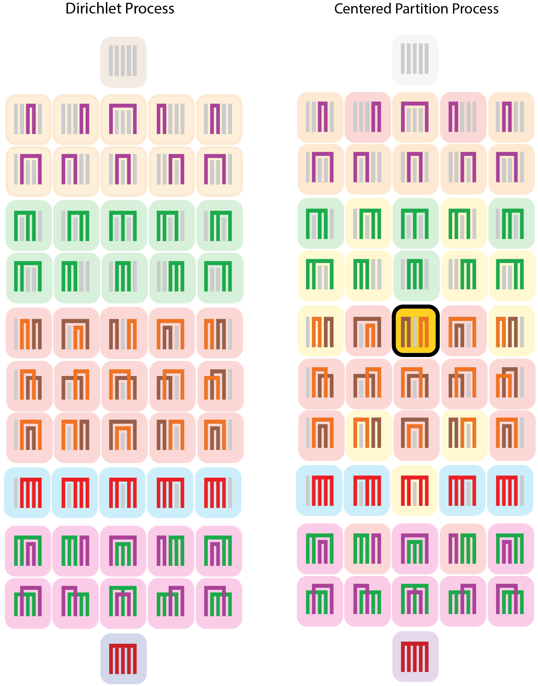
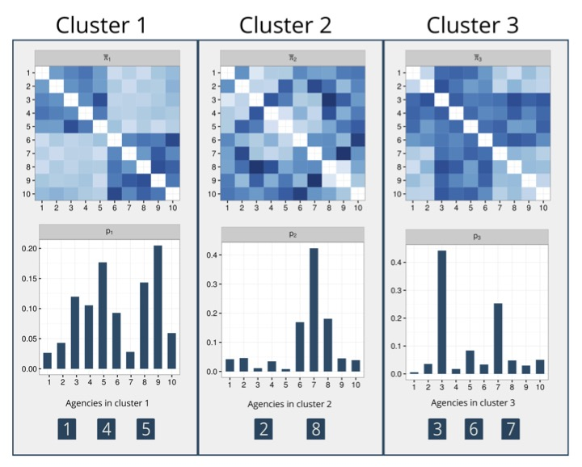

Bayesian nonparametrics
Developing flexible models for clustering and modeling
Bayesian nonparametrics (BNP) priors are often used as flexible models to describe the unknown distribution of a heterogeneous population, implicitly inducing a clustering of the observations into homogeneous groups.
Part of my work uses BNP methods to aid data analysis for a specific application, while I am also interested in developing methodological extensions of BNP priors to improve data analysis in practice.
Prior-driven clustering
-
Proposed a class of prior distributions on the partition space shrunk toward a known partition, named Centered Partition Processes.
-
Application in birth defect epidemiology, where clustering outcomes aid data analysis for rare defects. Prior information on the partition comes from medical knowledge of pregnancy evolution.
-
Paper selected for Discussion in Bayesian Analysis journal. [ link to Webinar ]
-
Latest work (2023) with Garritt Page & Fernando Quintana. We propose a framework that allows informing partitions with dependence over time. There is a pre-print on arXiV.
Applications using BNP priors
Item Response Theory models
IRT models are widely used in various social science disciplines to scale categorical responses from exams and questionnaires into continuous constructs. When interest is in making inference on the latent trait of a population of interest (e.g., ability of students, mental/physical functioning of patients), traditional methods using the standard normal distribution can be restrictive. I am interested in developing extensions for IRT models that are able to account for:
-
non-normal latent traits, i.e. the latent distribution presents asymmetries, multimodality or outliers. I have some work on this using BNP mixtures.
-
dependence between individuals, for example, considering classmates studying together for an exam.
Work in progress: I am collaborating with Meng (Chris) Qiu (U. of Notre Dame) who is working on extending the use of BNP priors in popular psychometric models. We have a first preprint focusing on Latent Class Analysis models.
Joint clustering of mixed domain data
-
Application in the context of targeted marketing for insurance products
-
Data: counts (number of subscribers to a product) and network data (co-subscriptions between products) for customers in different locations (agencies)
-
Aim: jointly model the data to find clusters of customers with the same purchasing behavior to target with the marketing strategy
-
The modeling framework uses BNP priors for clustering and a latent eigenmodel to describe the network data
- Posted on:
- February 4, 2023
- Length:
- 2 minute read, 372 words
- See Also: